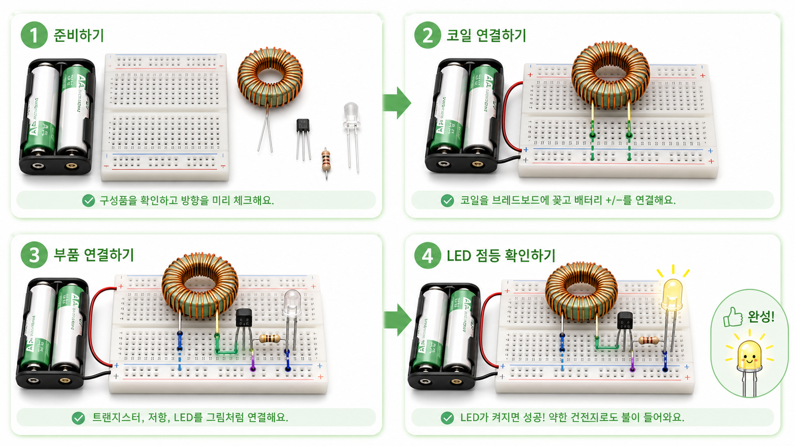
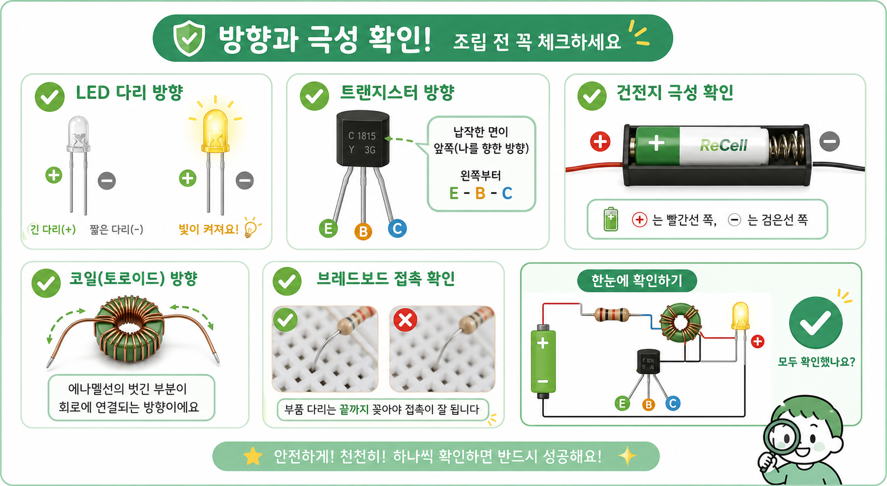

조립 가이드
부품 방향을 확인하며 천천히 조립하세요
Joule Thief 회로는 부품 수는 적지만 방향이 중요합니다. LED 극성, 트랜지스터 핀, 코일 연결을 차례대로 확인하면 실패를 줄일 수 있습니다.

조립 순서
- 구성품을 확인하고 누액이 있는 건전지는 제외합니다.
- 토로이드 코일의 두 권선을 구분하고 에나멜선 끝의 피복을 벗깁니다.
- 브레드보드에 트랜지스터, 저항, LED를 지정된 위치에 꽂습니다.
- 코일의 시작점과 끝점을 회로도 스티커 방향에 맞게 연결합니다.
- AA 건전지 홀더를 연결하고 LED가 켜지는지 확인합니다.
방향 확인

- LED는 긴 다리와 짧은 다리를 확인합니다.
- 트랜지스터는 부품 번호에 따라 핀 배열이 다를 수 있으므로 구매한 부품 기준으로 확인합니다.
- 코일 두 권선의 방향이 바뀌면 회로가 동작하지 않을 수 있습니다.
- 에나멜선 피복을 충분히 벗기지 않으면 전기가 통하지 않습니다.
- 배터리 극성을 반대로 연결하지 않습니다.
안전 체크
- 건전지가 뜨거워지거나 냄새가 나면 즉시 분리합니다.
- 누액이 있는 건전지는 절대 실습에 사용하지 않습니다.
- 금속 도구로 배터리 양극과 음극을 직접 연결하지 않습니다.
- 학생 실습 전에는 지도자가 완성 예시 회로를 한 번 먼저 테스트합니다.